Oracle Functionsを利用したVMシェイプ変更¶
このエントリーでは、想定したメモリ使用率を超える仮想マシン (VM) のシェイプをOracle Functionsを利用して動的に変更する手順を記載します。
注意事項: ハンズオン環境について
このハンズオンでは、動作確認のために意図的にVMのメモリ使用率を上昇させるコマンドを使用します。そのため、商用環境などでは絶対に行わないでください。 また、使用する仮想マシン (VM) についてもテスト用として用意したものを使用するようにしてください。
条件¶
-
クラウド環境
- 有効なOracle Cloudアカウントがあること
-
事前環境構築
- Oracle Functionsことはじめが完了していること
全体の流れ¶
手順の大まかな流れは以下のとおりです。
- 事前準備
・このステップでは、Oracle Functionsが仮想マシン (VM) のシェイプを変更できるようにするための準備を行います - Oracle Functionsの作成
・このステップでは、仮想マシン (VM) のシェイプを変更するFunctionsのデプロイを行います - アラームの作成
・このステップでは、仮想マシン (VM) のメモリ使用率上昇を検知し、Functionsを呼び出すための設定を行います - 仮想マシン (VM) のメモリ使用率の延伸
・このステップでは、意図的に仮想マシン (VM) のメモリ使用率を上昇させ、仮想マシン (VM) のシェイプが自動的に変更されるかの動作確認を行います
このエントリーが完了すると、以下のようなコンテンツが作成されます。
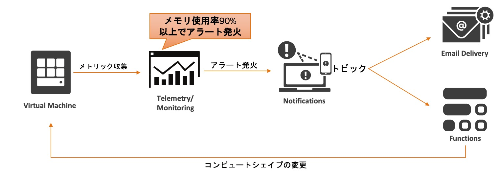
1.事前準備¶
このステップでは、Oracle Functionsから仮想マシン (VM) を操作するための動的グループとポリシーの設定を行います。
補足:動的グループおよびポリシーについて
動的グループを使用すると、Oracle Cloud Infrastructureコンピュータ・インスタンスを(ユーザー・グループと同様に)プリンシパルのアクターとしてグループ化し、ポリシーを作成できます。 そうすることで、インスタンスがOracle Cloud Infrastructureサービスに対してAPIコールを実行できるようにします。 詳細は動的グループの管理をご確認ください。
OCIコンソールのハンバーガーメニューをクリックして、「アイデンティティ」⇒「動的グループ」に移動し、「動的グループの作成」をクリックします。
以下項目を入力して、「作成」をクリックします。
- 名前：動的グループの名前。今回は、
func_dyn_grp - 説明：動的グループの説明。今回は、
Function Dynamic Group - ルール1：
ALL {resource.type = 'fnfunc', resource.compartment.id = '<compartment-ocid>'}(compartment.idは各自で使用するコンパートメントOCIDへ変更してください。)
コンパートメントOCIDについて
[アイデンティティ]⇒[コンパートメント]に移動して、使用するコンパートメント(今回はルートコンパートメント)を開いて、該当OCIDを確認します。
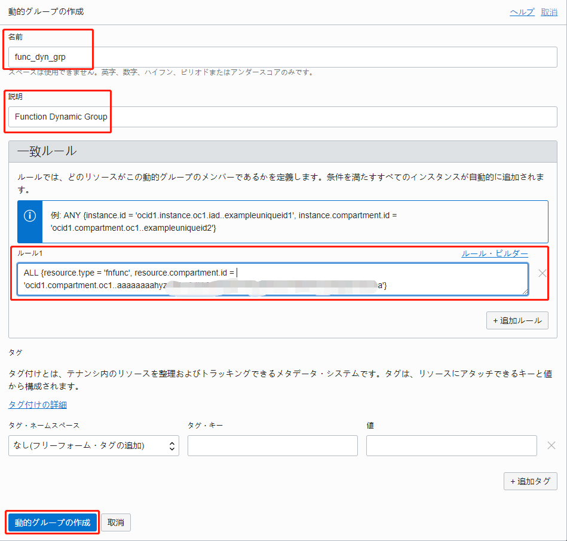
OCIコンソールのハンバーガーメニューをクリックして、「アイデンティティ」⇒「ポリシー」に移動し、「ポリシーの作成」をクリックします。
以下項目を入力して、「作成」をクリックします。
-
名前：ポリシーの名前。今回は、
fn-policies -
説明：ポリシーの説明。今回は、たとえば、
Function Policies -
ステートメント1：
allow dynamic-group func_dyn_grp to use instances in compartment xxxxxx(compartment名は各自で使用するコンパートメント名へ変更してください。)
コンパートメント名について
[アイデンティティ]⇒[コンパートメント]に移動して、使用するコンパートメント(今回はルートコンパートメント)を開いて、該当コンパートメント名を確認します。
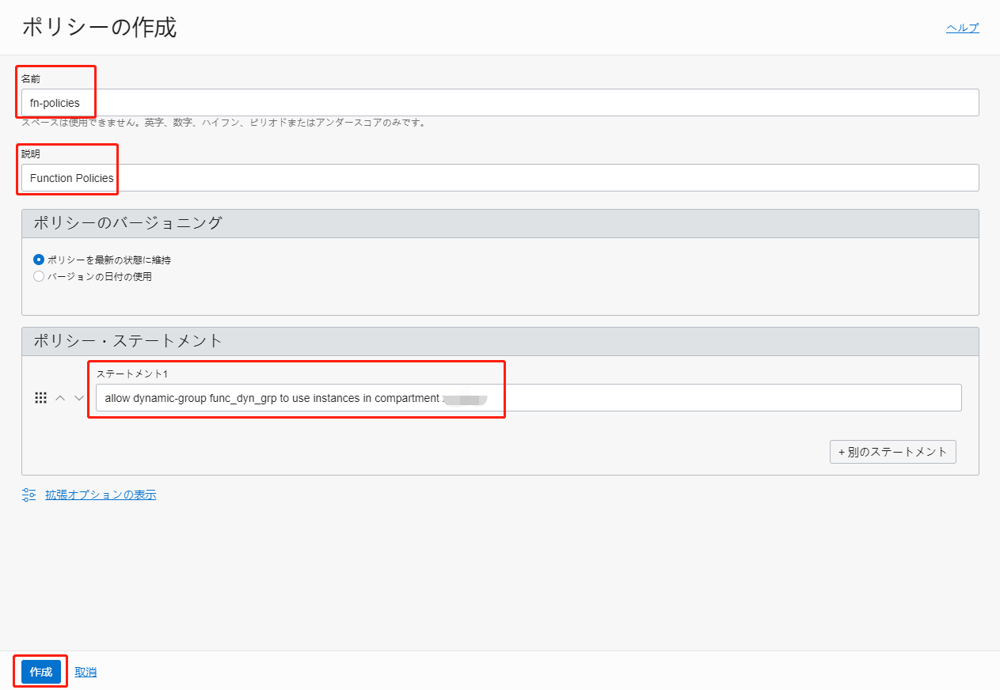
これで、動的グループの作成とポリシーの作成は完了しました。
2.Oracle Functionsの作成¶
このステップでは、仮想マシン (VM) のシェイプを変更するOracle Functionsのデプロイを行います。
OCIコンソールのハンバーガーメニューをクリックして、「開発者サービス」に移動して、「ファンクション」をクリックします。
コンソール右上にあるリージョン名を変更します。今回は、Oracle Functionsことはじめで利用したAshburnを使用します。
[アプリケーションの作成]をクリックして、次を指定して、「作成」をクリックします。
- 名前：アプリケーション名を指定。今回は、
fn-resize-vm - VCN：Functionを実行するVCNを指定。今回は、Oracle Functionsことはじめで作成したVCNを指定。
- サブネット：Functionを実行するサブネット。今回は、Oracle Functionsことはじめで作成したVCNのサブネットを指定。
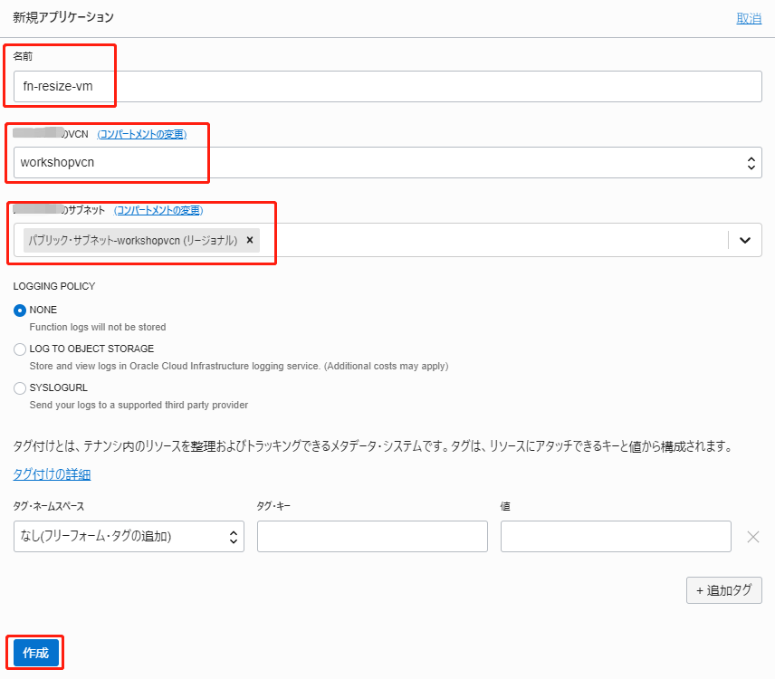
Oracle Functionsことはじめで作成したコンピュートインスタンスにログインし、ユーザーホームディレクトリに移動します。
cd $HOME
ワークショップ用のコンテンツをクローニングします。
git clone https://github.com/oracle-japan/functions_resize_vmshape.git
cd functions_resize_vmshape/fn-resize-vm
次を入力して、fn-resize-vmというPython言語で作成されたFunctionをデプロイします。
fn -v deploy --app fn-resize-vm
これで、Function作成とデプロイは完了しました。
3.アラームの作成¶
このステップでは、OCIコンソールを使用してアラームを作成していきます。
OCIコンソールハンバーガーメニューを開きます。「ソリューションおよびプラットフォーム」で、「モニタリング」に移動し、「アラーム定義」 をクリックします。
「アラームの作成」 をクリックします。
「アラームの作成」 ページの 「アラームの定義」 で、しきい値を設定します。
-
アラーム名：アラーム名を指定。今回は
high-memory-utilization-alarm -
メトリックの説明:
-
コンパートメント: ご自身のコンパートメントを指定。今回はルートコンパートメントを指定。
-
メトリック・ネームスペース:
oci_computeagent -
メトリック名:
MemoryUtilization(メモリ使用率) -
間隔:
1m -
統計:
Max(最大)
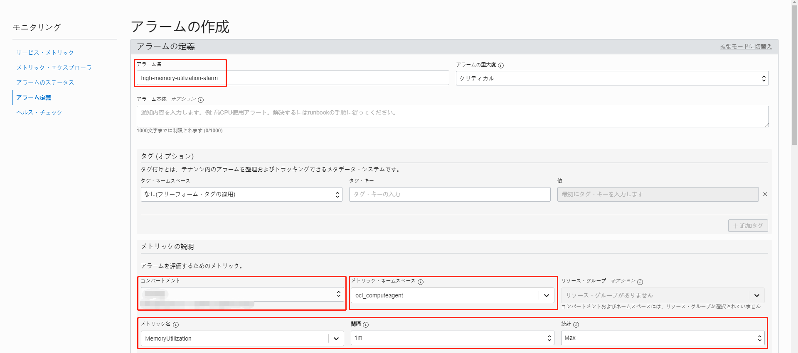
-
-
トリガールール:
-
演算子:より大きい
-
値:
90 -
トリガー遅延分数 :
1
-
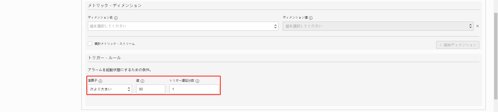
「Notifications」の宛先にファンクションを選択します。
-
宛先サービス:「Notifications」
-
コンパートメント: ご自身のコンパートメントを指定。今回はルートコンパートメントを指定。
-
トピック: 「トピックの作成」 をクリック
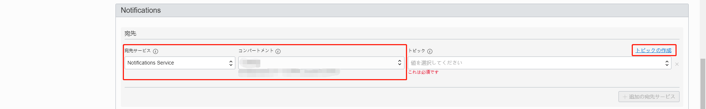 トピックとファンクションを既に作成している場合は、新しいトピックを作成する代わりに、ここでそのトピックを選択できます。
-
トピック名:
high-memory-utilization-topic-
サブスクリプションプロトコル:ファンクション
-
ファンクション・コンパートメント: ルートコンパートメントを指定。
-
ファンクション・アプリケーション:
fn-resize-vm -
ファンクション:
fn-resize-vm
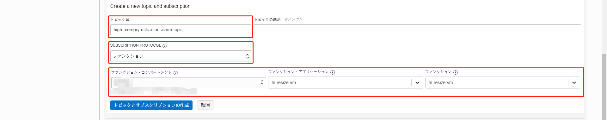
-
「トピックとサブスクリプションの作成」をクリックします。
トピックから作成されたトピックを選択して、「アラームの保存」をクリックします。
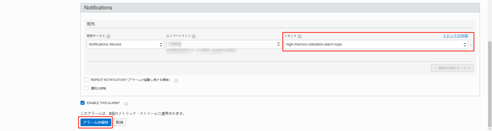
次に、OCIコンソールを使用して、アラームの設定時に作成したトピックにオプションの電子メールサブスクリプションを追加します。
OCIコンソールのハンバーガーメニューを開きます。「ソリューションおよびプラットフォーム」 で、「アプリケーション統合」に移動し、「通知」 をクリックします。
サブスクリプションを追加するトピックの名前をクリックします。今回は先ほど作成したhigh-memory-utilization-alarm-topicを選択します。
トピックの詳細ページで、「サブスクリプションの作成」 をクリックします。
4「サブスクリプションの作成」 ダイアログ ボックスで、電子メール サブスクリプションを設定します。「作成」 をクリックします。
- プロトコル: 「電子メール」 を選択します。
- 電子メール: 電子メール アドレスを入力します。
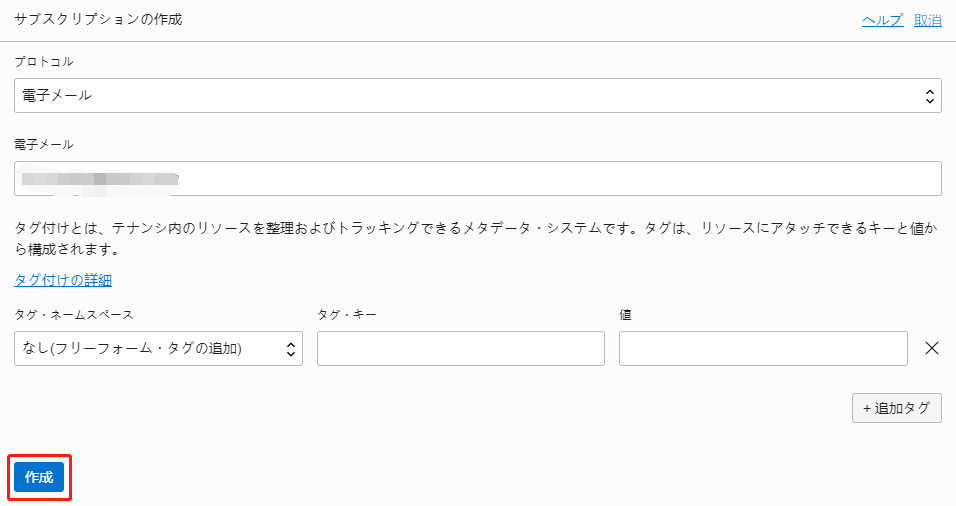
Notificationについて
Notificationサービスはファンクションや電子メールの他にもHTTPS(カスタムURL)/PagerDuty/Slackに対する通知を行うことができます。
電子メール サブスクリプションが作成され、指定した電子メールアドレスにサブスクリプションの確認URLが送信されます。サブスクリプションは、確認されるまで 「保留中」になります。
サブスクリプションをアクティブにするためには電子メールアドレスを承認する必要があるので、確認URLのリンクを開いてください。
これで、アラームの作成は完了です。
4.仮想マシン (VM) のメモリ使用率の延伸¶
このステップでは、Oracle Functionsことはじめで作成したコンピュートインスタンスを利用して動作確認を行います。
現在VMのシェイプを確認します。シェイプはVM.Standard2.1になっています。
以下のコマンドをコンピュートインスタンス上で実行し、メモリ使用率を徐々にあげていきます。
/dev/null < $(yes) &
以下のように10プロセス程度をバックグランド実行で起動します。
[opc@instance]$
[opc@instance]$ /dev/null < $(yes) &
[1] 2370
[opc@instance]$ /dev/null < $(yes) &
[2] 2372
[opc@instance]$ /dev/null < $(yes) &
[3] 2374
[opc@instance]$ /dev/null < $(yes) &
[4] 2376
[opc@instance]$ /dev/null < $(yes) &
[5] 2378
[opc@instance]$ /dev/null < $(yes) &
[6] 2380
[opc@instance]$ /dev/null < $(yes) &
[7] 2382
[opc@instance]$ /dev/null < $(yes) &
[8] 2384
[opc@instance]$ /dev/null < $(yes) &
[9] 2387
[opc@instance]$ /dev/null < $(yes) &
[10] 2389
[opc@instance]$
以下のコマンドを実行し、メモリ使用率を確認しましょう。 3秒間隔で表示されますが、徐々に空きメモリが減っていくことが確認できます。
free -h -s 3
total used free shared buff/cache available
Mem: 14G 5.5G 8.6G 16M 288M 8.7G
Swap: 8.0G 0B 8.0G
total used free shared buff/cache available
Mem: 14G 5.6G 8.5G 16M 288M 8.5G
Swap: 8.0G 0B 8.0G
total used free shared buff/cache available
Mem: 14G 5.7G 8.4G 16M 288M 8.5G
Swap: 8.0G 0B 8.0G
total used free shared buff/cache available
Mem: 14G 5.8G 8.3G 16M 288M 8.3G
Swap: 8.0G 0B 8.0G
total used free shared buff/cache available
Mem: 14G 5.9G 8.2G 16M 288M 8.2G
Swap: 8.0G 0B 8.0G
total used free shared buff/cache available
Mem: 14G 6.0G 8.1G 16M 288M 8.1G
Swap: 8.0G 0B 8.0G
total used free shared buff/cache available
Mem: 14G 6.1G 8.0G 16M 288M 8.0G
Swap: 8.0G 0B 8.0G
total used free shared buff/cache available
Mem: 14G 6.3G 7.9G 16M 288M 7.9G
Swap: 8.0G 0B 8.0G
total used free shared buff/cache available
Mem: 14G 6.4G 7.8G 16M 288M 7.8G
Swap: 8.0G 0B 8.0G
total used free shared buff/cache available
Mem: 14G 6.5G 7.6G 16M 288M 7.7G
Swap: 8.0G 0B 8.0G
5分～10分程度経つと、メモリ使用率が90%を超えて、アラームメールが送信されます。
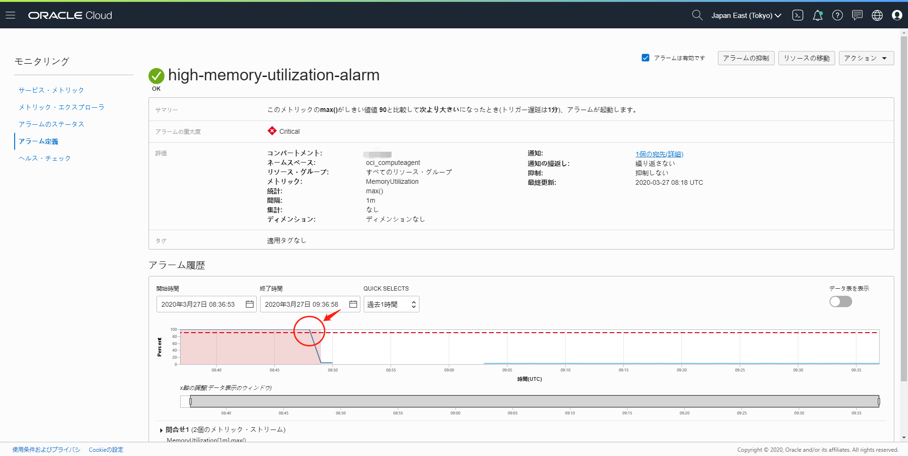
こちらは受信したアラームメールのサンプルです。
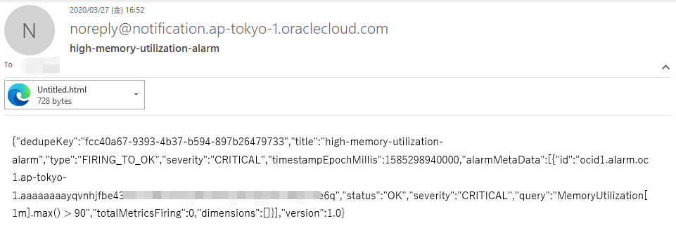
同時にFunctionが呼び出されて、VMを停止させます。
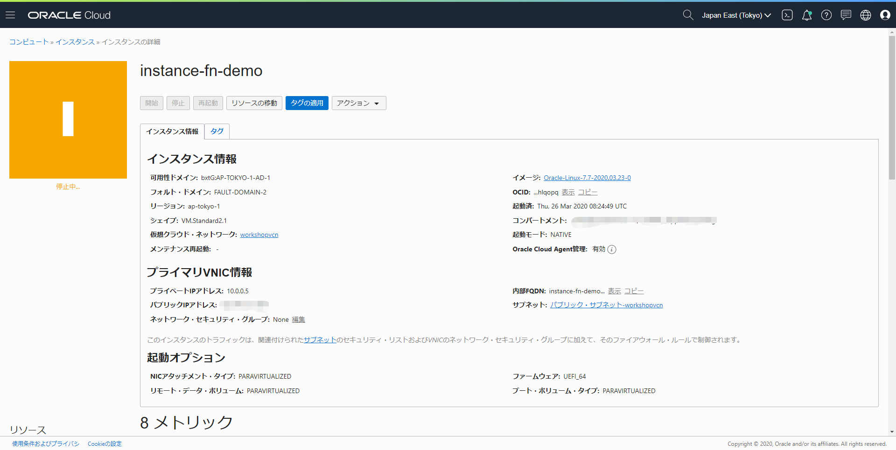
VMが停止になりましたら、同じFunctionによりVM.Standard2.2のVMが起動されます。(10-15分程度かかります)
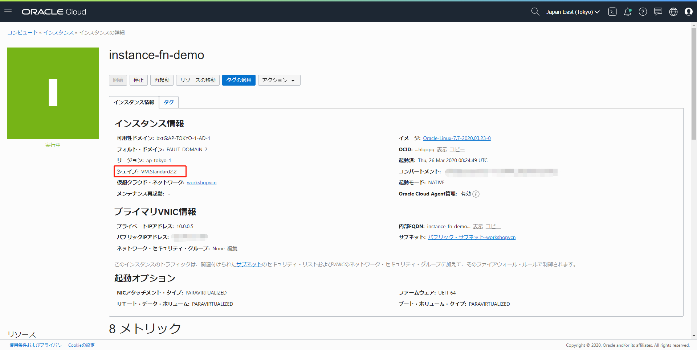
Oracle Notificationサービスを確認しますと、Notificationが実行されたことを確認できます。
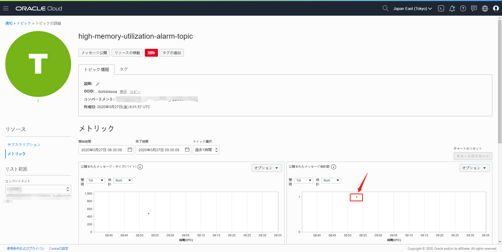
これで、Oracle Functionsを使用して、VMシェイプの変更に成功しました！
お疲れ様でした！